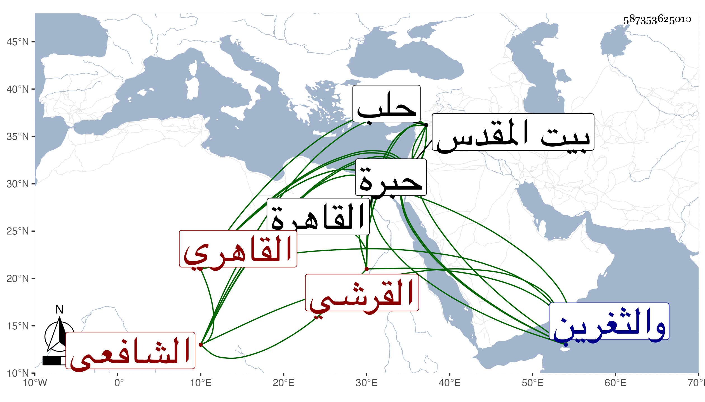

0902Sakhawi.DawLamic.ITO20230111-ara1.EIS1600.587353625010
Biography ID: 587353625010
190
محمد بن محمد بن حسن بن سعد بن محمد بن يوسف المحب أبو عبد الرحمن بن ناصر الدين بن البدر القرشي القاهري الشافعي أخو عبد الرحمن الماضي وأبوهما ويعرف كأبيه بابن الفاقوسي . ولد في وقت سحر ليلة السبت ثاني عشر رجب سنة اثنتين وثمانين وسبعمائة بدرب السلسلة من باب الزهومة بالقاهرة واعتنى به أبوه فأحضره على الجمال الباجي والمحيوي القروي والشمس ابن منصور الحنفي وابن الخشاب والشرف القدسي وأسمعه علي العراقي والهيثمي . والبرهان الآمدي والتقي بن حاتم والتنوخي وابن أبي المجد والحلاوي والسويداوي . وعبد الكريم حفيد القطب الحلبي في آخرين ، وأجاز له أبو هريرة بن الذهبي والكمال بن النحاس وأبو الهول الجزري وابن عرفة والجمال عبد الله مغلطاي والبهاء عبد الله بن أبي بكر الدماميني وعمر بن ايدغمش والبرهان بن عبد الرحيم ابن جماعة والنجم بن رزين والشمس العسقلاني والعز أبو اليمن بن الكويك . والصلاح البلبيسي والشمس بن ياسين الجزولي وجويرية الهكارية في آخرين من أماكن شتى ، وحفظ القرآن في صغره وكتبا وجود القرآن في ختمتين علي الفخر إمام الأزهر واشتغليسيرا ووقع في ديوان الانشاء والوزر وغيرهما وباشر خزن كتب السابقية بعد أبيه ، وحج قديما في سنة تسع وثمانمائة ، وزار القدس والخليل ودخل البلاد الشامية حلب فما دونها غير مرة والثغرين ... ، وحدث بالقاهرة سمع منه القدماء حملت عنه جملة وأفردت ما وقفت عليه من مروياته في كراسة ، وكان ساكنا منجمعا عن الناس خصوصا في آخر أمره فأنه كان فيه أحسن حالا مما قبله لكنه افتقر جدا وضاق عطنه. ومات مبطونا في ليلة الثلاثاء خامس عشري رجب سنة ثلاث وستين وصلى عليه من الغد في باب النصر ودفن بتربتهم وكان على مشهده سكينة رحمه الله وإيانا .
